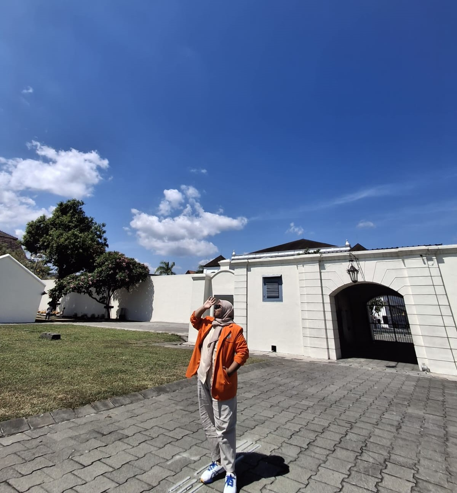

About Me
Nama saya Futhia Nanda Az-Zahra, mahasiswa Informatika Universitas Ahmad Dahlan. Saya tertarik dengan pemrograman web, data science, dan teknologi secara umum. Saya senang belajar berbagai bahasa pemrograman seperti C++, HTML, CSS, JavaScript saya tertarikdi bidang Informatika ini dari saya kelas 9 SMP dan saya melanjutkan apa yang ingin saya pelajari, dan pada akhirnya saya mengambil jurusan RPL Rekayasa Perangkat Lunak yang dimana saya juga belajar tentang pemrograman web, Basis Data, intinya yang berkaitan dengan Informatika, rasa ingin tau saya sangat tinggi, jadi di kelas 10 SMK saya mengambil jurusan itu, dan sampai sekarang saya menekuni jurusan yang saya ambil sampai saat ini di jurusan Informatika.
Planning
Sudah pasti saya ini Mahasiswa jadi saya ingin lulus tepat waktu, dan tidak mengulur-ulur waktu panjang untuk terus ada di Universitas ini, bagaimanapun semua sudah ada targetnya masing-masing, dan saya mengusahakan itu saat ini. Saya bercita-cita menjadi seorang Software Engineer profesional dan membahagiakan orang tua. Meski perjalanan kuliah Informatika tidak mudah, saya yakin kerja keras dan semangat belajar akan membawa saya meraih impian saya menjadi seorang programmer yang berpendidikan, kreatif, dan inovatif. Mendapatkan pekerjaan yang saya inginkan juga itu impian saya. Tidak ada kemustahilan ketika kita mau mencoba.
Pengalaman Belajar
Saya pernah melakukan pembelajaran di bootcamp DICODING yang dimana saya banyak sekali belajar tentang pemrograman Web
mulai dari saya Belajar Dasar Pemrograman Web, lalu Belajar Pemrograman JavaScript dan juga Belajar Membuat Front-End untuk pemula
sudah pasti banyak sekali pembelajaran yang saya pelajari di kelas DICODING ini, sudah pasti tidak mudah untuk belajar pemrograman Web
harus teliti dan memahami di setiap materi dan projek-projek nya yang di kerjakan. Tapi belajar Pemrograman Web ini seru banget
karena bisa modifikasi sesuai apa yang kita inginkan desain-desain web nya.
Dan saya sudah menyelesai kan kelas bootcamp di DICODING dan berhasil mendapatkan 3 Sertifikat atas pencapaian pembelajaran serta Pelatihan ini.
Harapan saya, saya bisa terus mengembangkan skill saya dalam bidang Front-End ataupun Back-End, dan terus belajar untuk menjadi Programmer yang handal.
Dan sekarang saya sedang mengambil Asah Affiliate by Dicoding.